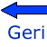
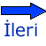

Genel Matematik Ders İçerikleri
Bölüm 1 - Başlangıç Bilgileri
1.1 -
Bilginin Gelişmesine Kısa Bir Bakış
1.1.1 -
Mezopotamya Kültürü
1.1.2 -
Mısır Uygarlığı
1.1.3 -
Antik Grek Uygarlığı
1.1.4 -
Çin Kültürü
1.1.5 -
Hint Kültürü
1.1.6 -
İslâm Dönemi
1.1.7 -
Evrensel Kültür Dönemi
1.2 -
Thales ile Başlayan Bilgilenmenin Yöntemleri
1.2.1 -
Filosofi
1.2.2 -
Mantık
1.2.3 -
Düşüncenin Kuralları
1.2.4 -
Bilgilenme Yöntemleri
1.2.4.1 -
Tümdengelim (Dedüksiyon)
1.2.4.2 -
Tümevarım (İndüksiyon)
1.2.4.3 -
Bilimsel Yöntem
1.2.4.4 -
Modern Düşünceler
1.2.5 -
Aksiyom
1.2.5.1 -
Aksiyomların Tanımı
1.2.5.2 -
Euclides Postulatumları
1.2.6 -
Mantığın Ögeleri
1.2.6.1 -
Terim
1.2.6.2 -
Önerme
1.2.6.3 -
Sav
1.2.6.4 -
Safsata
1.2.6.4.1 -
Bilgisizlik (Argumentum Ad Ignorantum)
1.2.6.4.2 -
Otorite Kayması (Ad Verecundiam)
1.2.6.4.3 -
Kişiliği Hedef Alma (Ad Hominem)
1.2.6.4.4 -
Çoğunluğa Popülist çağrı (Ad Populum)
1.2.6.4.5 -
Acındırma Yöntemi (Ad Misericordium)
1.2.6.4.6 -
Korkutma Yöntemi (Ad Baculum)
1.2.6.4.7 -
Ignoratio Elenchi
1.2.6.4.8 -
Akıl Karıştırıcı Soru
1.2.6.4.9 -
Yanlış Neden
1.2.6.4.10 -
Petitio Principii
1.2.6.4.11 -
Uygulama Yanlışlığı
1.2.6.4.12 -
Ters Uygulama Yanlışlığı
1.2.7 -
Matematikte Evrensel Gerçek
1.3 -
Sezgisel Kümelere Giriş
1.3.1 -
Georg Cantor Üzerine
1.3.2 -
Küme Kavramı
1.3.3 -
Küme Tanıtımı
1.3.4 -
Eşit, Alt ve Öz Alt Kümeler
1.3.5 -
Boş Küme
1.3.6 -
Kuvvet Kümesi
1.3.7 -
Russell Çelişkisi
1.3.8 -
Kümelerin Kesişimi
1.3.9 -
Kümelerin Birleşimi
1.3.10 -
Kümelerin Farkı
1.3.11 -
Bir Kümenin Tümleyeni
1.3.12 -
Küme Birleşiminin Kesişme Etrafında Dağılma Özelliği
1.3.13 -
Küme Kesişmesinin Birleşme Etrafında Dağılma Özelliği
1.3.14 -
Küme Tümleyenlerinin De Morgan Yasaları
« Site Ana Sayfa
« Genel Matematik Ana Sayfa
« Önsöz
Sonraki Sayfa»
Created with the Adobe Dreamweaver CC 2017